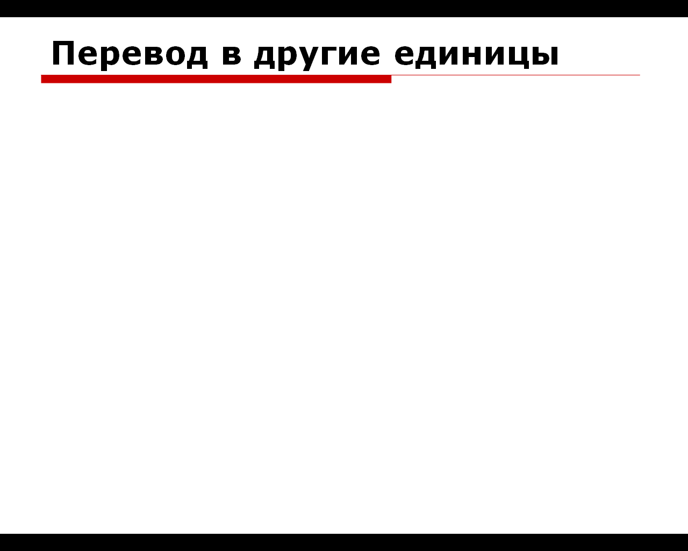

Представление и измерение текстовой, графической и звуковой информации
Решение задач
Цели
- Обобщить знания учащихся о единицах измерения информации
- Разобрать алгоритмы кодирования различных видов информация в компьютере
- Сформировать у учащихся представление об универсальности двоичного кодирования
Инструменты:
- ОС Windows
- Браузер
- Калькулятор
Задание 1. Записать в конспект понятия кодирования и декодирования информации
Формы представления и преобразования информации
Как
можно измерить количество информации? Да также, как мы измеряем длину
или массу чего-нибудь: сравнить с соответствующим эталоном. Сколько раз
эталонная единица укладывается в измеряемой величине, таков и результат
измерения. Надо только выбрать
эталон.
При работе с информацией возникает необходимость преобразования исходного представления информации, удобного для восприятия человеком, к представлению, удобному для хранения, передачи и обработки и наоборот. Такие преобразования называются кодированием и декодированием соответственно. Перечислим несколько известных систем кодирования:
1. Человеческий язык – система кодирования мыслей человека посредством речи;
2. Азбуки – системы кодирования компонент человеческого языка с помощью графических символов;
3. Код Морзе (телеграфная азбука): .--. ---- -- -.-. . - ..- ;
4. Код Брайля (азбука для слепых): ;
5. Код морской сигнализации (морская флажковая азбука) ;
6. Двоичное
кодирование: данные кодируются
последовательностью 0 и 1.
7.
Напишите, как вы думаете, что это за кодирование
Задание 3. Закодируй свое имя с помощью кодовой таблицы (Windows-1251)

Задание 4.
Закодируйте своё имя с помощью двоичной системы счисления, используя из таблицы (Перевод из 16 системы счисления в двоичную, Тема 4.1) столбцы Двоичной и Шестнадцатеричной систем счисления, каждую цифру Шестнадцатеричной с.с. представьте двоичной тетрадой (4 знака).
Задание 5.
Оформите краткий конспект
Измерение информации
Существует
несколько
способов измерения количества информации. Один из них называется алфавитный.
Алфавитный
подход
позволяет измерять количество
информации в тексте (символьном сообщении), составленном из символов
некоторого
алфавита.
К
содержанию текста такая мера информации отношения не имеет. Поэтому
такой
подход можно назвать объективным,
то есть не зависящим от воспринимающего его субъекта.
Алфавитный подход удобен при подсчете количества информации, хранимого, передаваемого и обрабатываемого техническими устройствами. Устройствам нет дела до содержательной стороны сообщений. Компьютеры, принтеры, модемы работают не с самой информацией а с ее представлением в виде сообщений. Оценить информационные результаты их работы как полезные или бесполезные может только человек.
Алфавит
–
это набор букв, знаков, цифр,
скобок и т.д. Количество символов в алфавите называется его мощностью
.
Например, мощность
алфавита из русских букв и дополнительных символов:
33
буквы + 10 цифр + 11
знаков препинания + скобки + пробел = 54
Сообщение
любой длины, использующее односимвольный
алфавит,
содержит нулевую
информацию.
Доказательство:
Предположим, что используемый алфавит состоит из одного символа, например, буквы "А" . Интуитивно понятно, что сообщить что-либо с помощью единственного символа невозможно.
Двоичный
алфавит
Двоичный
алфавит состоит из 2-х символов: 0
и 1
.
Информационный
вес символа двоичного алфавита называется 1
бит .
Следовательно,
1
бит – это 0 или 1 .
Назовем
комбинацию из 2-х,
3-х и т.д. бит двоичным
кодом.
Сколько
символов можно закодировать
двумя битами?
|
Порядковый номер символа |
1 |
2 |
3 |
4 |
|
Двухзначный двоичный код |
00 |
01 |
01 |
11 |
Отсюда
следует, что в алфавите мощностью 4
символа
информационный вес каждого символа - 2
бита.
Сколько
символов можно закодировать тремя битами?
|
Порядковый номер символа |
1 |
2 |
3 |
4 |
4 |
4 |
4 |
4 |
|
Двухзначный двоичный код |
000 |
001 |
010 |
011 |
100 |
101 |
110 |
111 |
Отсюда
следует, что в алфавите мощностью 8
символов
информационный вес каждого символа - 3
бита.
Можно
сделать вывод, что в алфавите мощностью 16
символов
информационный вес каждого символа будет 4
бита.
Обозначим
N - мощность алфавита буквой колличество символов в алфавитк),
i - Количество
бит для хранения одного символа из N вариантов символов или
информационный вес
символа буквой i.
Зависимость
между мощностью алфавита N
и информационным весом символа i(сколько
места отводиться под его хранение в памяти компьютера)
|
N |
2 |
4 |
8 |
16 |
|
b |
1 бит |
2 бита |
3 бита |
4 бита |
Заметим,
что 2 = 21,
4 = 22, 8 = 23,
16 = 24.
Вывод: Информационный вес каждого символа, выраженный в битах (i), и мощность алфавита (N) связаны между собой формулой в которой 2 т.е. данные храняться в двоичном коде:
|
N = 2i |
Задача 1:
Какое количество информации содержит сообщение о том, что нужный файл находится на одной из 8 дискет?Решение:
Задача 2:
Какое количество информации содержит сообщение о том, что при игре в рулетку шарик выпал в одной из 64 лунок?
Решение:

Задание 6. Оформите краткий конспект
Единицы измерения информации
| Скорость передачи информации это количество битов, передаваемых в 1 секунду. Скорость передачи 1 бит в 1 секунду называется 1 бод |
1 Кбод = 1024 бит/сек;
1 Мбод = 1024 Кбод;
1 Гбод = 1024 Мбод.
Задание 7. Сколько байт памяти надо выделить для хранения вашего имени
Задание 8. Сравните (поставьте знак <, > или =):

Представление текстовой информации

Задача 3
Определить информационный вес одного символа, считая что в используемом для сообщения алфавите 32 символа (буква ё не считать)?
Решение:
сли весь текст состоит из К символов (букв), то при алфавитном подходе размер содержащейся в нем информации равен:

Задача 4:
Алфавит состоит из 256 букв. Какое количество информации несет сообщение из шести букв, записанное с помощью такого алфавита?
Решение:
Задача 5:
В русском алфавите (не считая букву ё) 32 символа. Определить информационный объем сообщения «информатика – наука об информации» Алфавит состоит из 32 букв. Какое количество информации несет сообщение 33 букв, записанное с помощью такого алфавита?
Решение:
Подсчитаем количество символов в сообщении, включая пробелы и символы. К=33Решение:Задание 9. Сколько места в памяти надо выделить для хранение предложения Привет, Вася!
a) в кодировке ASCII
b) в кодировке UNICODE
Ответы записать в байтах и битах
Каждому символу сопоставляется двоичное число, образуя таблицу кодировок символов.
Существуют различные стандарты кодировок:ASCII, UCS-2, UNICODE

Задание 10.
Какое сообщение
закодировано в кодировке Windows-1251: 001101010010000011100001
111000001110101111101011
1110111011100010
Кодовая страница (Таблица
расширенного кода ASCII)
для русского языка:
Кодировка Windows-1251 (CP1251),
для системы UNIX
(КОИ8-R)
Задание 11. Сколько места надо выделить для хранения 10 страниц книги, если на каждой странице помещаются 32 строки по 64 символа в каждой?
Ответ записать в Кбайтах
Задание 12. Запишите решение задач
Задача
6:
Вася составляет 5-буквенные слова, в которых встречаются только буквы А, Б, В, Г, причём буква А появляется ровно 1 раз. Каждая из других допустимых букв может встречаться в слове любое количество раз или не встречаться совсем. Словом считается любая допустимая последовательность букв, не обязательно осмысленная. Сколько существует таких слов, которые может написать Вася?
Решение:
Кодовые слова устроены следующим образом: на одном из мест стоит буква A, на остальных произвольные четыре символа из трёхбуквенного алфавита.
Кi=N
К – количество символов в алфавите
N – то количество всех возможных «слов» (сообщений)
i – длина возможных слов
Найдём количество кодовых слов, в которых буква А стоит на первом месте: N=34=81. Ясно, что количество кодовых слов, в которых буква А стоит на втором, третьем, четвёртом или пятом местах также равно 81. Всего кодовых слов: 5 · 81 = 405.
Ответ: 405
Задача 7:
При регистрации в компьютерной системе каждому пользователю выдаётся пароль, состоящий из 20 символов и содержащий только символы из 10-символьного набора: А, В, C, D, Е, F, G, H, K, L. В базе данных для хранения сведений о каждом пользователе отведено одинаковое и минимально возможное целое число байт. При этом используют посимвольное кодирование паролей, все символы кодируют одинаковым минимально возможным количеством бит. Кроме собственно пароля, для каждого пользователя в системе хранятся дополнительные сведения, для чего выделено целое число байт, одно и то же для всех пользователей. Для хранения сведений о 20 пользователях потребовалось 300 байт. Сколько байт выделено для хранения дополнительных сведений об одном пользователе? В ответе запишите только целое число — количество байт.Решение:
Для кодирования 10-символьного набора требуется 4 бита (т.к 24=16 и это единственный подходящий вариант).Для хранения 20-символьного набора требуется 4*20=80 битов. 80 бит=10 байт.
На одного человека требуется 15 байт (300:20=15 байт) из них 10 отводится на пароль, значит на дополнительные сведения для пользователя отводится 5 байт
Ответ: 5 байт
Задача 8:
Определите информационный объем текста
Бамбарбия! Кергуду!
1) 38 бит
2) 144 бита
3) 152 бита
4) 19 бит
Решение:
В этом тексте 19 символов (обязательно считать пробелы и знаки препинания) если не дополнительной информации, считаем, что используется 8-битная кодировка (чаще всего явно указано, что кодировка 8 - или 16 -битная) поэтому в сообщении 19*8 = 152 бита информации
Ответ: 3.
|
Возможные ловушки:
|
Ответ: 5 байт
Задача 9:
Автоматическое устройство осуществило перекодировку информационного сообщения на русском языке, первоначально записанного в 16-битном коде Unicode, в 8-битную кодировку КОИ-8. При этом информационное сообщение уменьшилось на 480 бит. Какова длина сообщения в символах?
1) 30
2) 60
3) 120
4) 480
Решение:
1 обозначим количество символов через N
2 при 16-битной кодировке объем сообщения – 16*N бит
3 когда его перекодировали в 8-битный код, его объем стал
равен– 8*N бит
4 таким образом, сообщение уменьшилось на 16*N – 8*N = 8*N =
480 бит
5 отсюда находим N = 480/8 = 60 символов
Ответ: 2
Задача 10:
В таблице ниже представлена часть кодовой таблицы ASCII:
Символ 1 5 A B Q a b Десятичный код 49 53 65 66 81 97 98 Шестнадцатеричный код 31 35 41 42 51 61 62
Каков шестнадцатеричный код символа
«q» ?
1) 7116
2) 8316
3) A116
4) B316?
Решение:
- В кодовой таблице ASCII (American
Standard Code for Information Interchange, американский стандартный код
для обмена информацией) все заглавные латинские буквы A-Z расставлены
по алфавиту, начиная с символа с кодом 65=4116
- Все строчные латинские буквы a-z расставлены по алфавиту,
начиная с
символа с кодом 97=6116
- Разница кодов букв «q» и
«a» равна разнице кодов букв
«Q» и «A», то есть, 5116
– 4116=1016
- Тогда шестнадцатеричный код символа «q»
равен коду буквы «a» плюс 1016
- Находим 6116 + 1016=7116
Ответ: 1
Задача 11:
В
некоторой информационной системе информация кодируется двоичными
шестиразрядными словами. При передаче данных возможны их искажения,
поэтому в конец каждого слова добавляется седьмой (контрольный) разряд
таким образом, чтобы сумма разрядов нового слова, считая контрольный,
была чётной. Например, к слову 110011 справа будет добавлен 0, а к
слову 101100 — 1.
После приёма слова производится его обработка. При этом проверяется
сумма его разрядов, включая контрольный. Если она нечётна, это
означает, что при передаче этого слова произошёл сбой, и оно
автоматически заменяется на зарезервированное слово 0000000. Если она
чётна, это означает, что сбоя не было или сбоев было больше одного. В
этом случае принятое слово не изменяется.
1101001 0011000 0011101
было принято в виде
1101001 0001001 0011100.
Как будет выглядеть принятое сообщение после обработки?
1) 0000000 0001001 0011100
2) 1101001 0000000 0011100
3) 1101001 0000000 0000000
4) 1101001 0001001 0000000
Решение:
Произведём
обработку каждого слова принятого сообщения. Первое слово: 1101001,
сумма его разрядов 4 — чётная, слово не изменяется. Второе
слово:
0001001, сумма его разрядов 2 — чётная, слово не изменяется.
Третье слово: 0011100, сумма его разрядов 3 — нечётная, слово
автоматически заменяется на слово 0000000.
Ответ: 1101001 0001001 0000000
Отчёт в конспекте покажите преподавателю
Проверочная работа
Для
запуска
теста:
Откройте
в
проводнике
 папку
1_semestr\1_semestr\tema_4\Тест Измререние ифнформации\Измерение
информации. Алфавитный подход.
папку
1_semestr\1_semestr\tema_4\Тест Измререние ифнформации\Измерение
информации. Алфавитный подход.
Перетащите файл тестовых вопросов на файл приложения MyTestStudent.exe
Запустите
тест;

Выполнение заданий по решению задач на знание систем счисления, решение запишите в конспект;
Сделайте скринн (PrtScr) экрана с результатом прохождения теста, вставьте его в документ Word, сохраните документ в папке с номером своей группы. Покажите файл со скрином преподавателюАвтоматическое устройство осуществило перекодировку информационного сообщения на русском языке, первоначально записанного в 16-битном коде Unicode, в 8-битную кодировку КОИ-8. При этом информационное сообщение уменьшилось на 480 бит. Какова длина сообщения в символах?
1) 30 2) 60 3) 120 4) 480
Решение:
1 обозначим количество символов через N
2 при 16-битной кодировке объем сообщения – 16*N бит
3 когда его перекодировали в 8-битный код, его объем стал равен– 8*N бит
4 таким образом, сообщение уменьшилось на 16*N – 8*N = 8*N = 480 бит
Еще пример задания:
В таблице ниже представлена часть кодовой таблицы ASCII:
|
Символ |
1 |
5 |
A |
B |
Q |
a |
b |
|
Десятичный код |
49 |
53 |
65 |
66 |
81 |
97 |
98 |
|
Шестнадцатеричный код |
31 |
35 |
41 |
42 |
51 |
61 |
62 |
Каков шестнадцатеричный код символа «q» ?
1) 7116 2) 8316 3) A116 4) B316
Решение:
-
в кодовой таблице ASCII (American Standard Code for Information Interchange, американский стандартный код для обмена информацией) все заглавные латинские буквы A-Z расставлены по алфавиту, начиная с символа с кодом 65=4116
-
все строчные латинские буквы a-z расставлены по алфавиту, начиная с символа с кодом 97=6116
-
отсюда следует, что разница кодов букв «q» и «a» равна разнице кодов букв «Q» и «A», то есть, 5116 – 4116=1016
-
тогда шестнадцатеричный код символа «q» равен коду буквы «a» плюс 1016
-
отсюда находим 6116 + 1016=7116 (ответ 1).
Задачи для тренировки3:
-
Считая, что каждый символ кодируется одним байтом, определите, чему равен информационный объем следующего высказывания Жан-Жака Руссо:
Тысячи путей ведут к заблуждению, к истине – только один.
1) 92 бита 2) 220 бит 3) 456 бит 4) 512 бит
-
Считая, что каждый символ кодируется одним байтом, определите, чему равен информационный объем следующего высказывания Алексея Толстого:
Не ошибается тот, кто ничего не делает, хотя это и есть его основная ошибка.
1) 512 бит 2) 608 бит 3) 8 Кбайт 4) 123 байта
-
Считая, что каждый символ кодируется одним байтом, определите, чему равен информационный объем следующего высказывания Рене Декарта:
Я мыслю, следовательно, существую.
1) 28 бит 2) 272 бита 3) 32 Кбайта 4) 34 бита
-
В кодировке Unicode на каждый символ отводится два байта. Определите информационный объем слова из двадцати четырех символов в этой кодировке.
1) 384 бита 2) 192 бита 3) 256 бит 4) 48 бит
-
Считая, что каждый символ кодируется 16-ю битами, оцените информационный объем следующей пушкинской фразы в кодировке Unicode:
Привычка свыше нам дана: Замена счастию она.
1) 44 бита 2) 704 бита 3) 44 байта 4) 704 байта
-
Считая, что каждый символ кодируется одним байтом, оцените информационный объем следующего предложения из пушкинского четверостишия:
Певец-Давид был ростом мал, Но повалил же Голиафа!
1) 400 бит 2) 50 бит 3) 400 байт 4) 5 байт
-
Считая, что каждый символ кодируется одним байтом, оцените информационный объем следующего предложения:
Мой дядя самых честных правил, Когда не в шутку занемог, Он уважать себя заставил И лучше выдумать не мог.
1) 106 бит 2) 848 бит 3) 106 Кбайт 4) 848 Кбайт
-
Автоматическое устройство осуществило перекодировку информационного сообщения на русском языке, первоначально записанного в 8-битном коде, в 16-битную кодировку Unicode. При этом информационное сообщение увеличилось на 2048 байт. Каков был информационный объем сообщения до перекодировки?
1) 1024 байт 2) 2048 бит 3) 2 Кбайта 4) 2 Мбайта
-
Считая, что каждый символ кодируется 16-ю битами, оцените информационный объем следующей фразы в кодировке Unicode:
В шести литрах 6000 миллилитров.
1) 1024 байта 2) 1024 бита 3) 512 байт 4) 512 бит
-
Считая, что каждый символ кодируется 16-ю битами, оцените информационный объем следующего предложения:
Блажен, кто верует, тепло ему на свете!
1) 78 бит 2) 80 байт 3) 312 бит 4) 624 бита
-
Считая, что каждый символ кодируется одним байтом, оцените информационный объем следующего предложения:
Белеет Парус Одинокий В Тумане Моря Голубом!
1) 352 бита 2) 44 бита 3) 352 байта 4) 88 байт
-
Автоматическое устройство осуществило перекодировку информационного сообщения на русском языке, первоначально записанного в 16-битном коде Unicode, в 8-битную кодировку
КОИ-8. При этом информационное сообщение уменьшилось на 800 бит. Какова длина сообщения в символах?
1) 50 2) 100 3) 200 4) 800
-
В таблице ниже представлена часть кодовой таблицы ASCII:
|
Символ |
1 |
5 |
J |
K |
P |
j |
k |
|
Десятичный код |
49 |
53 |
74 |
75 |
80 |
106 |
107 |
|
Шестнадцатеричный код |
31 |
35 |
4A |
4B |
50 |
6A |
6B |
Каков шестнадцатеричный код символа «p» ?
1) 7016 2) 8516 3) 6F16 4) СЕ16
-
В таблице ниже представлена часть кодовой таблицы:
|
Символ |
С |
Т |
У |
Я |
с |
т |
у |
|
Десятичный код |
145 |
146 |
147 |
159 |
225 |
226 |
227 |
|
Шестнадцатеричный код |
91 |
92 |
93 |
9F |
E1 |
E2 |
E3 |
Каков шестнадцатеричный код символа «я» ?
1)
2A116 2)
DF16 3)
EF16 4)
18016